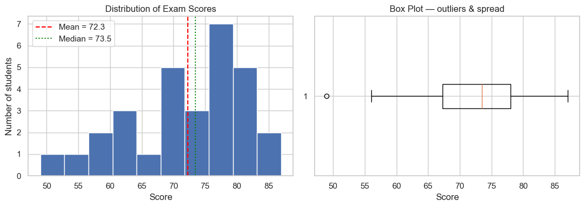
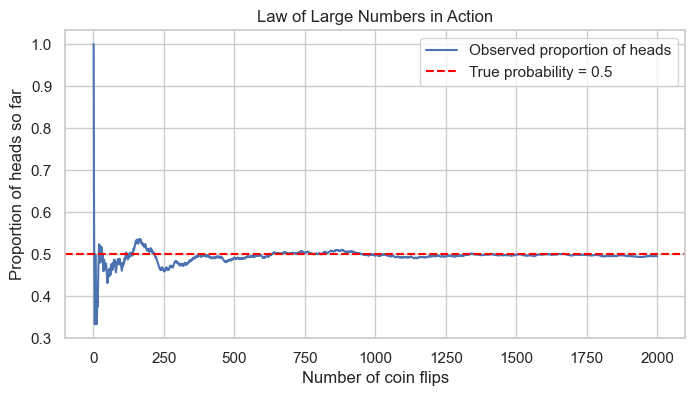
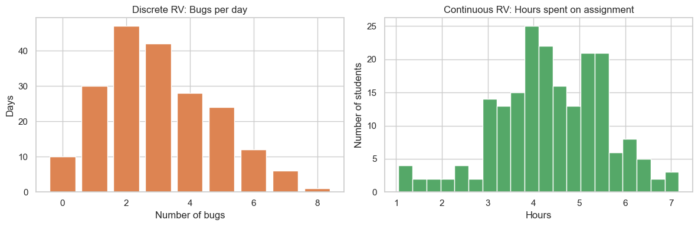
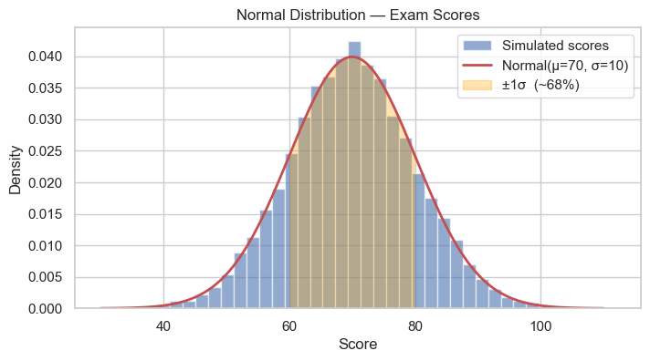
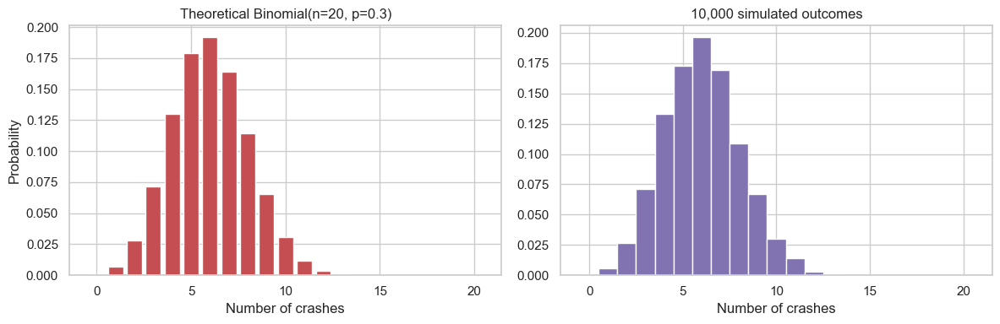
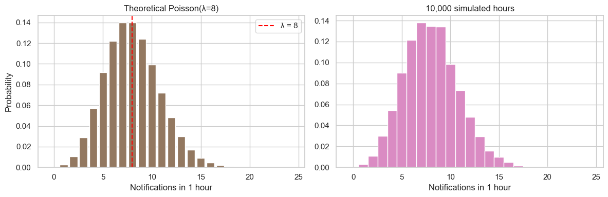
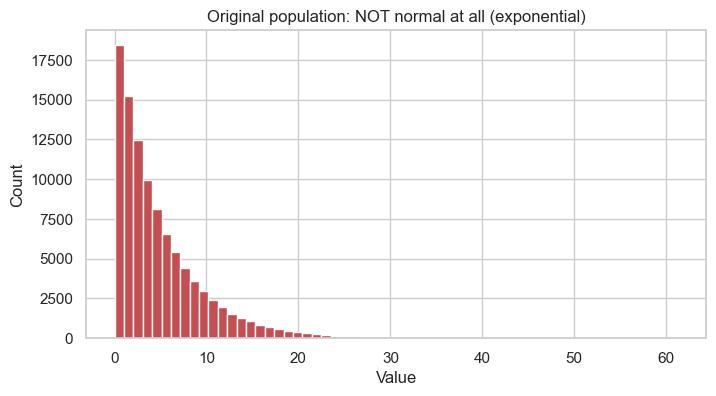
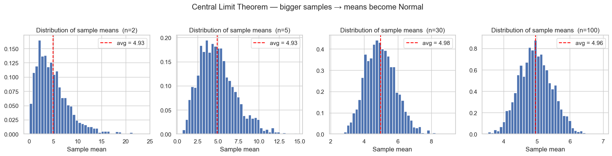
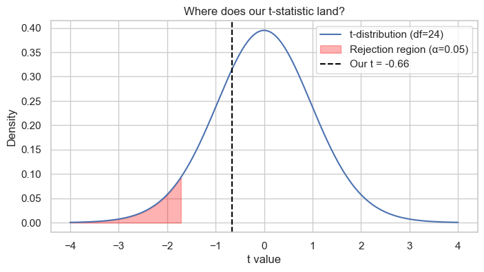

Applied Statistics — Foundations for BSIT & BSCS¶
Welcome! This notebook is your friendly first tour through the core ideas of statistics that power data science, machine learning, A/B testing, app analytics, and pretty much everything in modern tech.
We will keep things:
- Intuitive — no scary proofs
- Fun — using examples from coding, exams, social media, and apps you already use
- Hands-on — every idea comes with Python code and a picture
- Interactive — small exercises and mini quizzes scattered throughout
What you will learn¶
- Types of statistics — descriptive vs inferential
- Probability basics
- Random variables — discrete and continuous
- Common distributions — Normal, Binomial, Poisson
- The Central Limit Theorem — the most magical result in stats
- Hypothesis testing, p-values, and significance
Let's go! 🚀
Setup¶
We will use a few standard Python libraries. If a library is missing, install it with pip install numpy pandas matplotlib scipy seaborn.
import numpy as np
import pandas as pd
import matplotlib.pyplot as plt
import seaborn as sns
from scipy import stats
# Make plots look a bit nicer
sns.set_theme(style="whitegrid")
plt.rcParams["figure.figsize"] = (8, 4)
# Make our random examples reproducible
rng = np.random.default_rng(42)
print("All libraries loaded. Ready to do statistics! 📊")
All libraries loaded. Ready to do statistics! 📊
1. Types of Statistics¶
Statistics has two big personalities:
| Type | What it does | Example |
|---|---|---|
| Descriptive | Summarizes the data you have | "The average exam score in our class was 72." |
| Inferential | Uses a sample to infer something about the whole population | "Based on 500 surveyed students, we estimate all college students sleep ~6.4 hours a night." |
Quick analogy 🍕¶
- Descriptive statistics = telling someone exactly what's on the pizza in front of you.
- Inferential statistics = tasting one slice and predicting what the whole pizza tastes like.
Let's see both in action.
1.1 Descriptive statistics — describing what we have¶
Imagine we collected the exam scores of 30 students in a class. We want a quick summary.
# Imaginary exam scores out of 100
exam_scores = rng.normal(loc=72, scale=12, size=30).round().clip(0, 100)
print("Raw scores:", exam_scores.astype(int))
print("\n--- Center of the data ---")
print(f"Mean (average) : {np.mean(exam_scores):.2f}")
print(f"Median (middle) : {np.median(exam_scores):.2f}")
print(f"Mode (most common): {stats.mode(exam_scores, keepdims=False).mode}")
print("\n--- Spread of the data ---")
print(f"Min, Max : {exam_scores.min():.0f}, {exam_scores.max():.0f}")
print(f"Range : {exam_scores.max() - exam_scores.min():.0f}")
print(f"Std deviation : {np.std(exam_scores, ddof=1):.2f}")
print(f"Variance : {np.var(exam_scores, ddof=1):.2f}")
Raw scores: [76 60 81 83 49 56 74 68 72 62 83 81 73 86 78 62 76 60 83 71 70 64 87 70
67 68 78 76 77 77]
--- Center of the data ---
Mean (average) : 72.27
Median (middle) : 73.50
Mode (most common): 76.0
--- Spread of the data ---
Min, Max : 49, 87
Range : 38
Std deviation : 9.33
Variance : 86.96
# A picture is worth a thousand numbers
fig, axes = plt.subplots(1, 2, figsize=(11, 4))
axes[0].hist(exam_scores, bins=10, color="#4C72B0", edgecolor="white")
axes[0].axvline(np.mean(exam_scores), color="red", linestyle="--", label=f"Mean = {np.mean(exam_scores):.1f}")
axes[0].axvline(np.median(exam_scores), color="green", linestyle=":", label=f"Median = {np.median(exam_scores):.1f}")
axes[0].set_title("Distribution of Exam Scores")
axes[0].set_xlabel("Score")
axes[0].set_ylabel("Number of students")
axes[0].legend()
axes[1].boxplot(exam_scores, vert=False)
axes[1].set_title("Box Plot — outliers & spread")
axes[1].set_xlabel("Score")
plt.tight_layout()
plt.show()

Reading the box plot: - The box covers the middle 50% of students. - The line in the box is the median. - The whiskers reach the typical min/max. - Any tiny dots beyond the whiskers are outliers — students who did unusually well or poorly.
1.2 Inferential statistics — guessing about the population¶
We can never measure everyone. So we take a sample and use it to make smart guesses about the population.
| Term | Meaning |
|---|---|
| Population | The whole group you care about (e.g., all BSIT students in Nepal) |
| Sample | A subset of the population you actually measured (e.g., 50 BSIT students from your college) |
| Parameter | A number describing the population (μ, σ) — usually unknown |
| Statistic | A number computed from the sample (x̄, s) — what we actually compute |
The whole game of inferential statistics is:
"Given my sample statistic, what can I say about the population parameter?"
# Pretend the "true" average daily Instagram time for ALL students is 95 minutes
# (we, as researchers, do NOT know this — we have to estimate it!)
TRUE_POPULATION_MEAN = 95
TRUE_POPULATION_STD = 25
# We can only afford to survey 40 students
sample = rng.normal(TRUE_POPULATION_MEAN, TRUE_POPULATION_STD, size=40)
x_bar = np.mean(sample)
s = np.std(sample, ddof=1)
print(f"Our 40-student sample says:")
print(f" sample mean (x̄) = {x_bar:.2f} minutes/day")
print(f" sample std (s) = {s:.2f} minutes/day")
print(f"\nThe TRUE population mean (μ) = {TRUE_POPULATION_MEAN} minutes/day <-- usually unknown!")
print(f"How close did our small sample get? Off by {abs(x_bar - TRUE_POPULATION_MEAN):.2f} minutes.")
Our 40-student sample says:
sample mean (x̄) = 97.19 minutes/day
sample std (s) = 19.78 minutes/day
The TRUE population mean (μ) = 95 minutes/day <-- usually unknown!
How close did our small sample get? Off by 2.19 minutes.
🧠 Mini Quiz 1
- "The median age in our class is 19" — descriptive or inferential?
- "Based on 1,000 voters, candidate A is leading nationally" — descriptive or inferential?
- Is
7.2 hoursof sleep (computed from your 40-student survey) a parameter or a statistic?
1. Descriptive · 2. Inferential · 3. Statistic (it came from a sample)Click for answers
2. Probability — the language of uncertainty¶
Probability is just a number between 0 and 1 telling us how likely something is.
P(event) = 0→ impossibleP(event) = 1→ certainP(event) = 0.5→ 50-50 chance (like a fair coin landing heads)
The classic formula:
Example — rolling a die 🎲¶
What is the probability of rolling an even number?
- Favorable outcomes: {2, 4, 6} → 3 outcomes
- Total outcomes: {1, 2, 3, 4, 5, 6} → 6 outcomes
P(even) = 3 / 6 = 0.5
Let's verify this with a simulation. (When the math gets tricky, simulating is a developer's superpower.)
# Roll a die 100,000 times and count how often we get an even number
n_rolls = 100_000
rolls = rng.integers(low=1, high=7, size=n_rolls) # 1..6 inclusive
prob_even = np.mean(rolls % 2 == 0)
print(f"Theoretical P(even) = 0.5")
print(f"Simulated P(even) = {prob_even:.4f} ({n_rolls:,} rolls)")
Theoretical P(even) = 0.5
Simulated P(even) = 0.4997 (100,000 rolls)
Law of large numbers¶
The more trials we run, the closer our observed frequency gets to the true probability. This is why casinos always win in the long run, and why your phone's auto-suggest gets smarter with more data.
# Watch the running average converge to 0.5 (probability of heads)
flips = rng.integers(0, 2, size=2000) # 0 = tails, 1 = heads
running_average = np.cumsum(flips) / np.arange(1, len(flips) + 1)
plt.plot(running_average, color="#4C72B0", label="Observed proportion of heads")
plt.axhline(0.5, color="red", linestyle="--", label="True probability = 0.5")
plt.xlabel("Number of coin flips")
plt.ylabel("Proportion of heads so far")
plt.title("Law of Large Numbers in Action")
plt.legend()
plt.show()

Two probability ideas you'll see everywhere¶
Independent events — the outcome of one doesn't affect the other.
Two coin flips, two different students taking an exam, etc.
Conditional probability — probability of A given that B already happened.
P(student passes | studied 5+ hours)
These ideas underlie machine learning, recommender systems, and Bayesian reasoning. We'll meet them again later in the course.
3. Random Variables¶
A random variable is just a number that comes from a random process. Think of it as a placeholder for "the result of some random thing."
X = number of likes your Instagram post gets in 1 hour📱Y = your friend's commute time tomorrow⏱️Z = whether your code compiles on the first try(1 = yes, 0 = no) 💻
Two flavors¶
| Type | Values | Examples |
|---|---|---|
| Discrete | Countable (0, 1, 2, 3, …) | Number of bugs in your code, number of likes, number of students absent |
| Continuous | Any value in a range (including decimals) | Time spent studying, height, CPU temperature |
Rule of thumb: if you'd report it as "5 things" → discrete. If you'd report it as "5.27 seconds" → continuous.
# Discrete: number of bugs reported per day in a small app (whole numbers)
bugs_per_day = rng.poisson(lam=3, size=200)
# Continuous: time (in hours) students spent on a coding assignment
study_hours = rng.normal(loc=4.5, scale=1.2, size=200).clip(0, None)
fig, axes = plt.subplots(1, 2, figsize=(12, 4))
# Discrete -> bar chart of counts
unique, counts = np.unique(bugs_per_day, return_counts=True)
axes[0].bar(unique, counts, color="#DD8452", edgecolor="white")
axes[0].set_title("Discrete RV: Bugs per day")
axes[0].set_xlabel("Number of bugs")
axes[0].set_ylabel("Days")
# Continuous -> smooth histogram
axes[1].hist(study_hours, bins=20, color="#55A868", edgecolor="white")
axes[1].set_title("Continuous RV: Hours spent on assignment")
axes[1].set_xlabel("Hours")
axes[1].set_ylabel("Number of students")
plt.tight_layout()
plt.show()
print(f"Avg bugs/day : {bugs_per_day.mean():.2f}")
print(f"Avg study hrs : {study_hours.mean():.2f}")

Avg bugs/day : 3.02
Avg study hrs : 4.38
4. Common Distributions¶
A distribution describes how the values of a random variable are spread out. Three you absolutely need to know:
4.1 Normal Distribution — the bell curve 🔔¶
Used when many small random effects add up. Heights, exam scores, measurement errors, IQ — they all tend to look bell-shaped.
Key facts (the 68-95-99.7 rule):
- ~68% of values fall within 1 standard deviation of the mean
- ~95% fall within 2 standard deviations
- ~99.7% fall within 3 standard deviations
Notation: X ~ Normal(μ, σ) where μ is the mean and σ is the std deviation.
# Simulating exam scores with mean 70, std 10
mu, sigma = 70, 10
scores = rng.normal(mu, sigma, size=10_000)
x = np.linspace(30, 110, 200)
pdf = stats.norm.pdf(x, mu, sigma)
plt.hist(scores, bins=40, density=True, color="#4C72B0", alpha=0.6, label="Simulated scores")
plt.plot(x, pdf, "r-", lw=2, label=f"Normal(μ={mu}, σ={sigma})")
# Shade the 68% region
plt.fill_between(x, pdf, where=(x >= mu - sigma) & (x <= mu + sigma),
alpha=0.3, color="orange", label="±1σ (~68%)")
plt.title("Normal Distribution — Exam Scores")
plt.xlabel("Score")
plt.ylabel("Density")
plt.legend()
plt.show()
# How many actually landed inside ±1σ?
inside = np.mean(np.abs(scores - mu) <= sigma)
print(f"Fraction of scores within ±1σ (theory ≈ 0.68): {inside:.3f}")

Fraction of scores within ±1σ (theory ≈ 0.68): 0.687
4.2 Binomial Distribution — counting successes¶
Use it when you repeat the same experiment n times, each trial has only two outcomes (success / failure), and trials are independent.
Examples: - Out of 10 coin flips, how many are heads? - Out of 50 app installs, how many users open the app at least once? - Out of 20 quiz questions, how many do you get right by guessing?
Notation: X ~ Binomial(n, p) — n trials, success probability p.
Mean = n × p, variance = n × p × (1−p).
# Imagine our app has a 30% probability of crashing on launch.
# Out of 20 launches, how many crashes do we see?
n, p = 20, 0.30
# Theoretical probability mass function
k = np.arange(0, n + 1)
pmf = stats.binom.pmf(k, n, p)
# Simulate it 10,000 times
sims = rng.binomial(n, p, size=10_000)
fig, axes = plt.subplots(1, 2, figsize=(12, 4))
axes[0].bar(k, pmf, color="#C44E52", edgecolor="white")
axes[0].set_title(f"Theoretical Binomial(n={n}, p={p})")
axes[0].set_xlabel("Number of crashes")
axes[0].set_ylabel("Probability")
axes[1].hist(sims, bins=np.arange(-0.5, n + 1.5), density=True, color="#8172B2", edgecolor="white")
axes[1].set_title("10,000 simulated outcomes")
axes[1].set_xlabel("Number of crashes")
plt.tight_layout()
plt.show()
print(f"Expected crashes (n*p): {n * p:.2f}")
print(f"Simulated average : {sims.mean():.2f}")
print(f"P(exactly 6 crashes) : {stats.binom.pmf(6, n, p):.4f}")
print(f"P(more than 8 crashes) : {1 - stats.binom.cdf(8, n, p):.4f}")

Expected crashes (n*p): 6.00
Simulated average : 6.01
P(exactly 6 crashes) : 0.1916
P(more than 8 crashes) : 0.1133
4.3 Poisson Distribution — counting rare events over time¶
Use it when you're counting how many times something happens in a fixed window, when events are rare and independent.
Examples: - Notifications you receive per hour 📲 - Customers entering a coffee shop per minute ☕ - Bugs reported on GitHub per day 🐛 - Cars passing a toll booth per minute 🚗
Notation: X ~ Poisson(λ) where λ is the average rate of events per window.
Mean = variance = λ.
# On average you get 8 social media notifications per hour
lam = 8
k = np.arange(0, 25)
pmf = stats.poisson.pmf(k, lam)
sims = rng.poisson(lam, size=10_000)
fig, axes = plt.subplots(1, 2, figsize=(12, 4))
axes[0].bar(k, pmf, color="#937860", edgecolor="white")
axes[0].axvline(lam, color="red", linestyle="--", label=f"λ = {lam}")
axes[0].set_title("Theoretical Poisson(λ=8)")
axes[0].set_xlabel("Notifications in 1 hour")
axes[0].set_ylabel("Probability")
axes[0].legend()
axes[1].hist(sims, bins=np.arange(-0.5, 25.5), density=True, color="#DA8BC3", edgecolor="white")
axes[1].set_title("10,000 simulated hours")
axes[1].set_xlabel("Notifications in 1 hour")
plt.tight_layout()
plt.show()
print(f"P(0 notifications next hour) = {stats.poisson.pmf(0, lam):.4f}")
print(f"P(≥ 15 notifications) = {1 - stats.poisson.cdf(14, lam):.4f}")

P(0 notifications next hour) = 0.0003
P(≥ 15 notifications) = 0.0173
✏️ Try it yourself!
- Change
pin the Binomial cell to0.05(a much more reliable app). Re-run. What happens to the shape?- Change
lamin the Poisson cell to2and then to30. Notice how the shape becomes more bell-curve-like asλgrows? Curious why? Read on. 👇
5. The Central Limit Theorem (CLT) — the magic trick of statistics ✨¶
If you take many samples from any distribution and look at the distribution of the sample means, those means form a Normal distribution — even if the original data was super weird.
It works as long as:
- The samples are independent
- The sample size is "big enough" (often n ≥ 30 is plenty)
Why should you care?¶
Almost every formula in inferential statistics — confidence intervals, hypothesis tests, A/B tests — secretly assumes something is approximately Normal. The CLT is what guarantees that, even when reality looks nothing like a bell curve.
It is the reason the same t-test works whether you're studying delivery times, app session lengths, or the weight of mangoes. 🥭
# Take a really NON-normal distribution: an exponential one (think "wait times")
# It is heavily right-skewed -- nothing like a bell curve.
population = rng.exponential(scale=5.0, size=100_000)
plt.hist(population, bins=60, color="#C44E52", edgecolor="white")
plt.title("Original population: NOT normal at all (exponential)")
plt.xlabel("Value")
plt.ylabel("Count")
plt.show()
print(f"Population mean: {population.mean():.2f}")
print(f"Looks skewed? Definitely.")

Population mean: 4.99
Looks skewed? Definitely.
# Now: repeatedly take samples of size n, compute their means, and plot those means.
# Watch the magic.
def plot_clt(sample_size, n_samples=2000, ax=None):
means = [rng.choice(population, size=sample_size, replace=False).mean()
for _ in range(n_samples)]
ax.hist(means, bins=40, color="#4C72B0", edgecolor="white", density=True)
ax.set_title(f"Distribution of sample means (n={sample_size})")
ax.set_xlabel("Sample mean")
ax.axvline(np.mean(means), color="red", linestyle="--",
label=f"avg = {np.mean(means):.2f}")
ax.legend()
fig, axes = plt.subplots(1, 4, figsize=(16, 4))
for ax, n in zip(axes, [2, 5, 30, 100]):
plot_clt(n, ax=ax)
plt.suptitle("Central Limit Theorem — bigger samples → means become Normal", y=1.02)
plt.tight_layout()
plt.show()

Notice three things:
- The original data was super skewed, but the means start looking like a bell curve.
- As
ngrows, the bell becomes narrower (means become more reliable estimates). - The center of all those means lands right on the true population mean.
This is why, when you see a poll saying "average user spends 27 minutes a day, ±2 minutes", you can trust that ±2 even though individual users are wildly different — the CLT is doing the heavy lifting behind the scenes.
6. Hypothesis Testing, p-values & Significance¶
Hypothesis testing is the formal way of asking:
"Is what I'm seeing a real effect, or could it just be random luck?"
The 5-step recipe¶
- Set up two competing claims
- H₀ (null hypothesis): the boring, default answer ("nothing changed")
-
H₁ (alternative hypothesis): the interesting claim ("something is different")
-
Pick a significance level α (commonly
0.05) -
This is your willingness to be wrong — a 5% risk of falsely rejecting H₀.
-
Collect data and compute a test statistic
-
Compute the p-value
-
The probability of seeing data at least this extreme if H₀ were true.
-
Decide
- If
p-value < α→ reject H₀. The result is "statistically significant." - Otherwise → fail to reject H₀. Not enough evidence.
A coder's analogy 💻¶
- H₀ = "my new code is the same speed as the old code" (no change)
- H₁ = "my new code is faster"
- p-value = "if my code is really the same speed, what's the chance I'd see a speedup this big just by random fluctuation?"
- Tiny p-value → very unlikely it was just luck → probably the optimization actually worked. 🎉
Worked example — does coffee make you code faster? ☕💻¶
Suppose the typical time to solve a debugging puzzle is 20 minutes.
You give 25 students a strong coffee, then time them. The average for the coffee group is 18.4 minutes.
Is coffee really helping, or could 18.4 just be due to luck?
- H₀: μ = 20 (coffee makes no difference)
- H₁: μ < 20 (coffee makes you faster — a one-sided test)
- α = 0.05
# Generate the coffee group's puzzle-solving times
coffee_times = rng.normal(loc=18.4, scale=4.0, size=25)
print("Coffee group times (minutes):")
print(np.round(coffee_times, 1))
claimed_mean = 20 # the "no effect" baseline (H0)
# One-sample t-test, one-sided ("less than")
t_stat, p_two_sided = stats.ttest_1samp(coffee_times, popmean=claimed_mean)
p_one_sided = p_two_sided / 2 if t_stat < 0 else 1 - p_two_sided / 2
print(f"\nSample mean : {coffee_times.mean():.2f} minutes")
print(f"Sample std : {coffee_times.std(ddof=1):.2f}")
print(f"t-statistic : {t_stat:.3f}")
print(f"p-value (one-sided): {p_one_sided:.4f}")
alpha = 0.05
if p_one_sided < alpha:
print(f"\n✅ p-value ({p_one_sided:.4f}) < α ({alpha})")
print(" Reject H₀. Evidence suggests coffee really does speed up debugging!")
else:
print(f"\n❌ p-value ({p_one_sided:.4f}) ≥ α ({alpha})")
print(" Fail to reject H₀. The speedup could plausibly be random noise.")
Coffee group times (minutes):
[20.3 27.3 19.7 18.2 19.9 18. 21.8 21.2 23. 22.3 15.8 21. 21.6 13.8
21.8 15. 18.1 19.8 19.2 15.6 23. 14.6 16.8 19.5 22.5]
Sample mean : 19.58 minutes
Sample std : 3.18
t-statistic : -0.656
p-value (one-sided): 0.2590
❌ p-value (0.2590) ≥ α (0.05)
Fail to reject H₀. The speedup could plausibly be random noise.
# Visualizing the test
x = np.linspace(-4, 4, 400)
y = stats.t.pdf(x, df=24)
critical = stats.t.ppf(0.05, df=24) # one-sided 5% in the LEFT tail
plt.plot(x, y, "b-", label="t-distribution (df=24)")
plt.fill_between(x, y, where=x <= critical, color="red", alpha=0.3,
label=f"Rejection region (α=0.05)")
plt.axvline(t_stat, color="black", linestyle="--", label=f"Our t = {t_stat:.2f}")
plt.title("Where does our t-statistic land?")
plt.xlabel("t value")
plt.ylabel("Density")
plt.legend()
plt.show()

What the p-value really means (and doesn't)¶
✅ It IS: The probability of seeing data this extreme if H₀ were true.
❌ It is NOT: - The probability that H₀ is true. - The probability that you're wrong. - A measure of how important the effect is. (A tiny effect can be "significant" with enough data!)
Two errors you can make¶
| Reality \ Decision | Reject H₀ | Fail to reject H₀ |
|---|---|---|
| H₀ is true | Type I error (false alarm 🚨) | ✅ Correct |
| H₀ is false | ✅ Correct | Type II error (missed it 😴) |
α controls Type I errors. Choosing α = 0.05 means: "I'm OK with a 5% chance of crying wolf."
🧠 Mini Quiz 2
- You run an A/B test on a new "Buy" button. p-value = 0.03, α = 0.05. What do you do?
- A friend says "p-value = 0.20 means there's an 80% chance the new feature works." True or false?
- You repeat your experiment 100 times with no real effect. About how many times will you get a "significant" result by sheer luck if α = 0.05?
1. Reject H₀ — adopt the new button. 2. False. p-values are never the probability that a hypothesis is true. 3. About 5 times. (That's exactly what α = 5% means.)Click for answers
7. Hands-On Exercises 🛠️¶
Try these on your own! Each one builds on what you've learned.
Exercise 1 — Phone screen time¶
Generate 60 fake "minutes of phone screen time per day" values from a Normal distribution with mean 200 and std 45. Compute the mean, median, and std of your sample. Plot a histogram.
Exercise 2 — Quiz guessing¶
A multiple-choice quiz has 15 questions, each with 4 options. If you guess every answer, what is the probability you get at least 8 correct? Use the Binomial distribution.
Exercise 3 — CLT for dice¶
Roll a fair 6-sided die. Take samples of size 50. Compute the mean of each sample. Repeat 1,000 times and plot the distribution of those means. Does it look Normal even though a die roll isn't?
Exercise 4 — Hypothesis test¶
You think students at your college sleep less than the national average of 7 hours. You survey 30 students; their mean sleep is 6.4 hours, std 1.1. Run a one-sided t-test. Is the difference significant at α = 0.05?
Scaffolding cells are below — fill in the blanks!
# --- Exercise 1: Phone screen time ---
# screen_time = rng.normal(loc=..., scale=..., size=...)
# print("Mean :", ...)
# print("Median :", ...)
# print("Std :", ...)
# plt.hist(...); plt.show()
# --- Exercise 2: Quiz guessing ---
# n, p = 15, 1/4
# prob_at_least_8 = 1 - stats.binom.cdf(..., n, p)
# print(prob_at_least_8)
# --- Exercise 3: CLT for dice ---
# means = []
# for _ in range(1000):
# sample = rng.integers(1, 7, size=50)
# means.append(sample.mean())
# plt.hist(means, bins=30); plt.show()
# --- Exercise 4: Sleep hypothesis test ---
# Simulate a sample with mean=6.4, std=1.1, n=30 (or invent your own values)
# sleep = rng.normal(6.4, 1.1, 30)
# t_stat, p_two = stats.ttest_1samp(sleep, popmean=7)
# p_one = p_two / 2 if t_stat < 0 else 1 - p_two / 2
# print("t =", t_stat, " p (one-sided) =", p_one)
8. Recap & What's Next¶
You now have the core toolkit for thinking statistically:
- ✅ Descriptive vs Inferential — summarize what you have, infer what you don't
- ✅ Probability — the language of uncertainty
- ✅ Random variables — discrete (countable) vs continuous (measurable)
- ✅ Distributions — Normal (bell curve), Binomial (counting successes), Poisson (counting rare events)
- ✅ Central Limit Theorem — why averages are magical
- ✅ Hypothesis testing & p-values — separating signal from noise
Where these ideas show up in your tech career¶
| Concept | Real-world use |
|---|---|
| Descriptive stats | Dashboards, analytics, reporting |
| Probability | ML models, recommender systems, spam filters |
| Distributions | Performance benchmarking, simulations, risk analysis |
| CLT | Confidence intervals around any metric |
| Hypothesis testing | A/B testing, quality control, research |
Next up in this course¶
We'll layer more powerful tools on top of these foundations:
- Parameter Estimation — how do we fit models from data?
- Linear Regression — predicting numbers
- Logistic Regression & Classification — predicting categories
- Regularization & Model Metrics — building models that generalize
Keep experimenting with the code, change the numbers, break things, fix them. Statistics becomes intuitive once you simulate. 🧪
Happy analyzing! 🎯